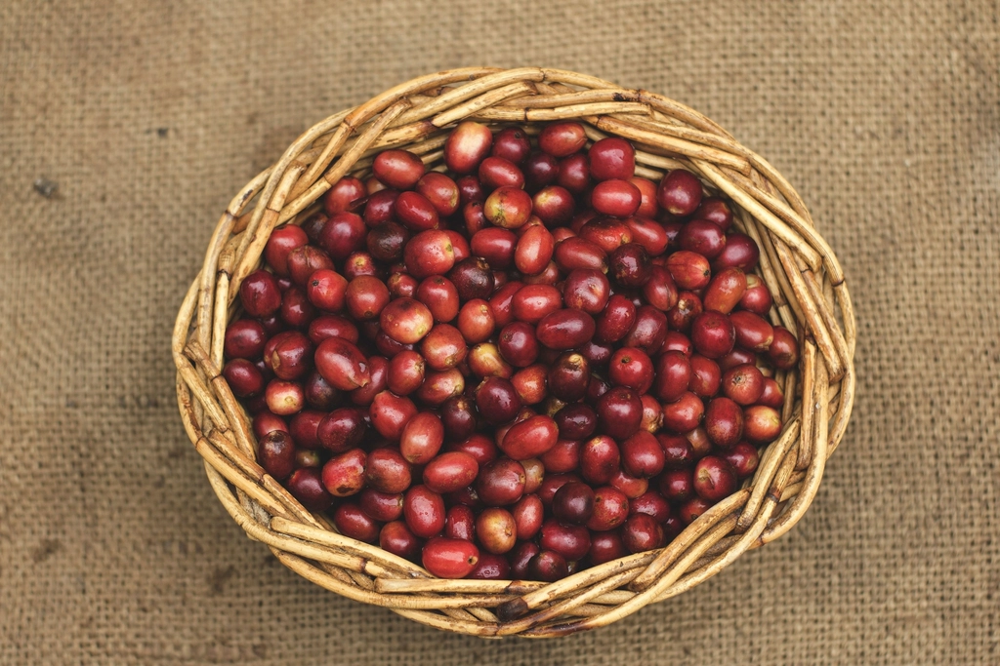
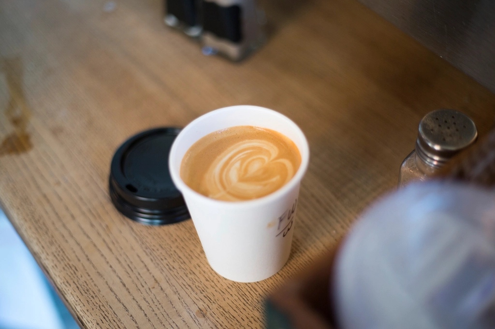
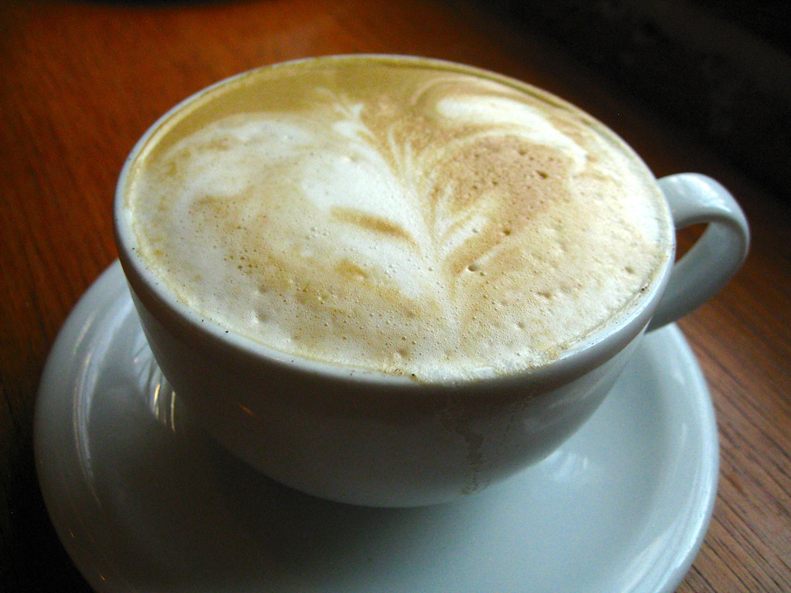
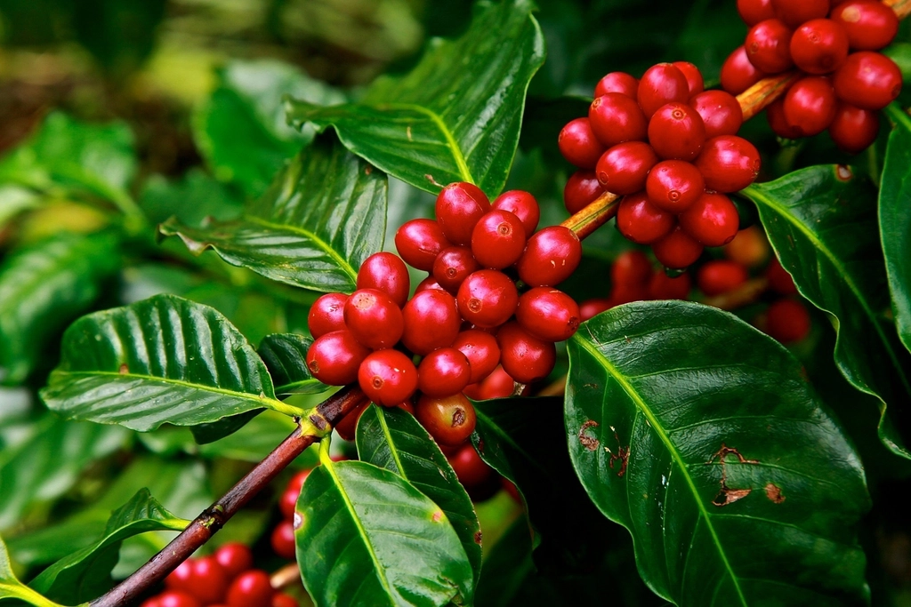

コーヒー
エスプレッソ・カプチーノを中心に、丁寧な一杯をお届けしています。
豆を選ぶ
一杯のはじまりは、豆を選ぶところから。丁寧に向き合う姿勢が、そのままカップの中に表れているようです。

丁寧に淹れる
ひとつひとつの手順を大切に、時間をかけて抽出する。名物のエスプレッソは、その丁寧さがそのまま味わいに変わる一杯だという声が多く聞かれます。
一杯が届く
山の空気の中で味わう、丁寧に淹れられた一杯。美味しいコーヒーをいただく時間は、まさに至福のひとときだという声もあります。


Cappuccino
午前中は、カプチーノを
午前中に訪れた際はカプチーノもおすすめ、という声があります。エスプレッソの名物感に加えて、ミルクの柔らかさが山の空気によく合うのかもしれません。

Beans
持ち帰って、山の時間を
コーヒー豆の販売もあるようです。この場所で味わった一杯を、自宅でも思い出せるように。豆の種類や価格については、お店へ直接お問い合わせください。
Note
水は、イタリアのカフェのように
お水はイタリアのカフェでよくあるように炭酸水で出されることがある、という声も。小さなことですが、山の中でそんな一杯に出会うと、少し旅をしているような気分になります。
山あいの一軒へ、どうぞ。